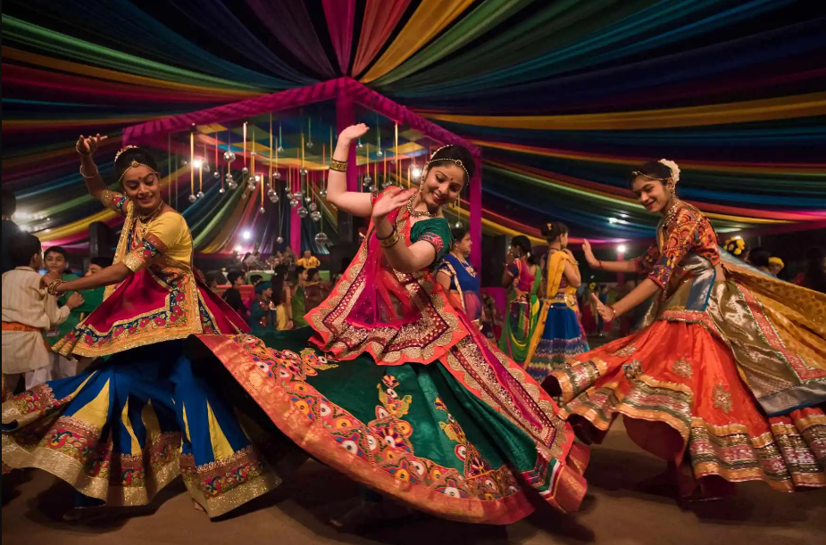

Garba Night 😍💗
At Parul University on 29th sep

Jay Mataji
નવરાત્રિ એ નવ રાત્રિ અને દસ દિવસનો હિંદુ તહેવાર છે, જે શક્તિના પ્રતીક એવા દેવી દુર્ગાના નવ સ્વરૂપોની પૂજા કરવા માટે ઉજવવામાં આવે છે. આ તહેવાર અનિષ્ટ પર સારાની જીતની ઉજવણી કરે છે, જે મહાન દૈત્ય મહિષાસુર પર માતા દુર્ગાની જીતની દંતકથા પર આધારિત છે.
ગરબા: આ એક પરંપરાગત ગુજરાતી લોકનૃત્ય છે, જે કેન્દ્રીય દીપ અથવા માતા દુર્ગાની પ્રતિમાની આસપાસ વર્તુળાકારમાં રજૂ કરવામાં આવે છે. તે જીવનના ચક્રીય સ્વભાવ અને સાર્વત્રિક સર્જનાત્મક શક્તિનું પ્રતીક છે.
Sheri Garba
Sheri Garba is the traditional, community-based Garba dance performed in the streets and residential areas of Gujarat during the festival of Navratri. The name comes from the Gujarati word sheri, which means "street".
Mandali Garba
Mandli Garba refers to large-scale, professionally organized Garba events held during the Navratri festival, contrasting with the more intimate, neighborhood-based Sheri Garba.